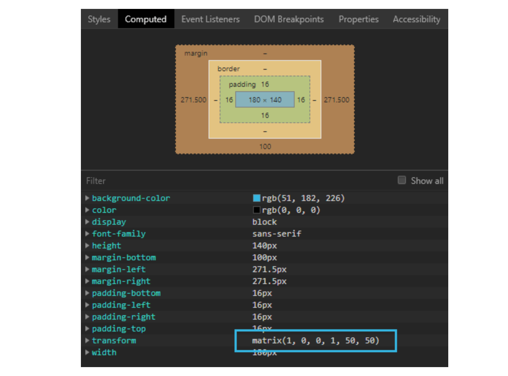

Transformările 2D se pot obţine şi cu funcţia matrix() care unifică toate transformările CSS. Ceea ce este în special interesant, este că până în prezent, browserul compilează transformările 2D din fundal în funcţia matrix(). Confirmarea acestui lucru se poate găsi şi în browser, în panoul Computed. De exemplu, pe un element se definește următoarea transformare:
transform: translate(50px, 50px);
Analizând panoul Computed se poate vedea clar că browserul compilează transformarea prezentată în forma care presupune utilizarea funcţiei matrix()
Din imaginea de mai sus vedem că transformarea translaţiei în fundal a fost transformată de browser în funcţia matrix() cu anumite valori ale parametrilor în imagine marcat cu cadrul albastru).
Funcţia matrix() acceptă şase parametri:
matrix(scaleX(), skewY(), skewX(), scaleY(), translateX(), translateY());
Interesant este că funcţia matrix() acceptă valori pentru efectuarea scalării, înclinării şi translației, dar nu şi pentru rotire. Prin urmare, funcţia matrix() efectuează rotirea prin combinarea scalării şi a înclinării:
transform: rotate(20deg);
Linia browserului tocmai prezentată se transformă în:
transform: matrix(0.939693, 0.34202, -0.34202, 0.939693, 0, 0);